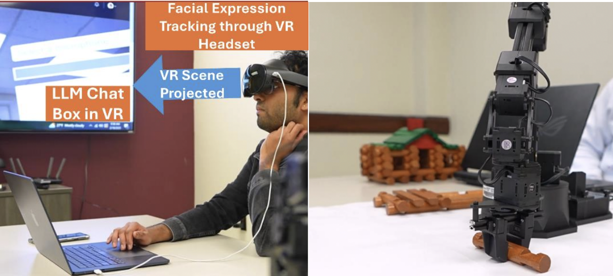

Multimodal Human–Urban Robot Interaction Interface · Paper Accepted - Proceedings Forthcoming · Ongoing Extended Study
Focus: Multimodal information mediation and adaptive decision-making in embodied systems.
Tech Stack: Python · PyTorch · C# · GPT-4o (OpenAI API) · Whisper (ASR) · EfficientNet-B0 · YOLOv11 · Websocket · Unity (VR) · Meta Quest Pro
AI / ML Engineering Summary
AI / ML Focus
- Large Language Model (GPT-4o-mini) for decision making and command parsing
- CNN (EfficientNet-B0) for facial expression–based engagement recognition
- YOLOv11 for real-time object detection and scene analysis
Learning Paradigm
- Transfer learning and fine-tuning for engagement recognition
- Prompt-engineered LLM inference
- Emphasis on system-level learning, model orchestration, and inference-time adaptation rather than standalone model training.
Data Modalities
- RGB images (scene and avatar face)
- Speech (ASR via Whisper)
- Text (LLM inputs and outputs)
Inference Constraints
- Real-time interaction
- Low-latency decision making
- Continuous perception–action loop
Engineering & Systems
- Pipeline: Speech → ASR → LLM controller ← (engagement + scene analysis) → robot command generation
- Integration: Unity-based VR interface, OpenAI APIs, CV models, robot control abstraction
- Deployment: VR digital twin validated on a physical robot arm (Reactor RX200)
Evaluation
- Engagement classification accuracy (up to ~76% after thresholding)
- Task completion correctness
- Qualitative interaction fluency
Baselines
- Pre-trained emotion recognition model
- Non-adaptive, command-only robot behavior
Scale
- Real-time user interaction scenarios
- Multi-stage fine-tuning experiments with incremental test sets
Paper · Demo · Code (in progress)
Research Narrative
Problem. Robotic systems deployed in domestic and urban environments are typically command-driven and lack awareness of user engagement, emotional state, and situational context. As a result, corrections are often reactive rather than proactive, leading to task inefficiencies, user frustration, and reduced perception of robot intelligence during collaboration.
Research Question. How can a multimodal interaction framework that combines language, vision-based engagement recognition, and immersive interfaces enable proactive, human-aware robot behavior and improve task fluency and user experience in human–robot collaboration?
Approach. This work presents a human-centric multimodal interaction framework integrating Virtual Reality, computer vision, and large language models. A VR environment serves as a low-workload communication interface, while a CNN-based engagement recognition module infers user state from facial expressions. In parallel, a YOLO-based scene analysis module tracks object states and task progress. These perceptual signals are aggregated and fed into a prompt-engineered LLM that functions as a central controller, dynamically deciding when to intervene, ask clarifying questions, or translate user intent into executable robot actions.
Outcome & Implications. The system demonstrates the feasibility of proactive, engagement-aware robot collaboration, producing smoother task progression and more natural interaction compared to passive command-based baselines. Beyond the working prototype and live demo, this research contributes a flexible, robot-agnostic interaction architecture that advances human-centered AI design in HRI and informs future deployments in assistive, domestic, and urban robotic systems.